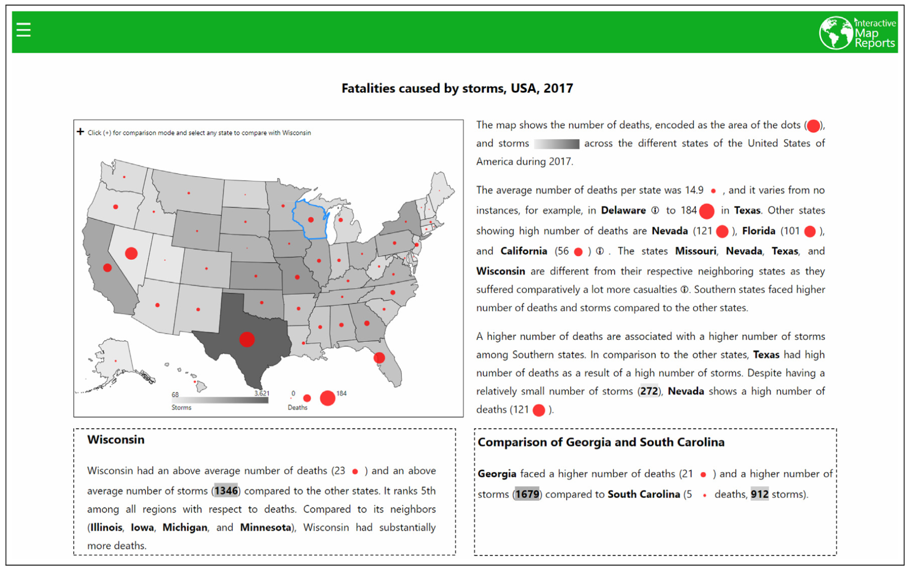

<!DOCTYPE html>
<html xmlns="http://www.w3.org/1999/xhtml" lang="" xml:lang="">
<head>
  <meta charset="utf-8" />
  <meta name="generator" content="pandoc" />
  <meta name="viewport" content="width=device-width, initial-scale=1.0, user-scalable=yes" />
  <meta name="author" content="牧 修平○ (東京工業大学）" />
  <title>時系列データに対する説明的可視化</title>
  <style>
    code{white-space: pre-wrap;}
    span.smallcaps{font-variant: small-caps;}
    span.underline{text-decoration: underline;}
    div.column{display: inline-block; vertical-align: top; width: 50%;}
    div.hanging-indent{margin-left: 1.5em; text-indent: -1.5em;}
    ul.task-list{list-style: none;}
    div.csl-bib-body { }
    div.csl-entry {
      clear: both;
    }
    .hanging div.csl-entry {
      margin-left:2em;
      text-indent:-2em;
    }
    div.csl-left-margin {
      min-width:2em;
      float:left;
    }
    div.csl-right-inline {
      margin-left:2em;
      padding-left:1em;
    }
    div.csl-indent {
      margin-left: 2em;
    }
  </style>
  <link rel="stylesheet" href="etc/page.css" />
  <script src="https://cdn.jsdelivr.net/npm/mathjax@3/es5/tex-chtml-full.js" type="text/javascript"></script>
  <!--[if lt IE 9]>
    <script src="//cdnjs.cloudflare.com/ajax/libs/html5shiv/3.7.3/html5shiv-printshiv.min.js"></script>
  <![endif]-->
</head>
<body>
<header id="title-block-header">
<h1 class="title">時系列データに対する説明的可視化</h1>
<p class="subtitle">Explanatory Visualization for Time Series Data</p>
<p class="author">牧 修平○ (東京工業大学）</p>
</header>
<h5 class="af1" id="abstract">ABSTRACT</h5>
<!-- データを理解しやすくするために様々な可視化手法が使われているが、スケーラビリティやデータの構造の関係で、伝えたいデータの特徴を可視化から認識することが難しい可能性がある。
そこで可視化に加えて、データの特徴を言葉によって提供する研究が行われている。
本論文では、Social Progress Indexというアイテム数の多い時系列データを例に、データの分析をサポートする可視化と、テンプレートベースで生成したデータの要約文を提供するシステムを提案する。
また本論文では、時系列データの形からデータを探索する方法、データの要約文を生成するテンプレートの構成について説明する。
最後にケーススタディを通してシステムの用性を示す。 -->
<p>Various visualization methods are used to make data easier to understand, but due to scalability and data structure, it may be difficult to recognize the features of the data we want to convey from the visualization. Therefore, in addition to visualization, research has been done to provide the features of data by words. In this paper, using the Social Progress Index, a time-series data with a large number of items as an example, we propose a system that provides visualizations to support data analysis and template-based summary sentences of the data. In this paper, we also explain how to search for data in the form of time series data and how to construct templates to generate summary text of the data. Finally, we show the usability of the system through a case study.</p>
<p>Keyword: Time Series Data, Explanatory Visualization</p>
<h1 id="はじめに">はじめに</h1>
<!-- もっと丁寧に書いたほうがいいでしょう。各段落ごとに主張したいことはひとつに絞り、そのひとつずつの主張について、根拠や文献を示して根拠を説明することが大切です。 -->
<p>生のデータを見るだけでは分析したり理解したりするのが難しいデータに対して、その分析や理解のために可視化を行う研究はたくさん行われてきている<span class="citation" data-cites="bryan2016temporal Gschwandtner2018KnowYE gortler2019stippling sondag2020uncertainty">(Bryan, Ma, and Woodring 2016; Gschwandtner and Erhart 2018; Görtler et al. 2019; Sondag et al. 2020)</span>。 しかし可視化によるデータの分析や理解に不慣れなユーザや可視化だけでは理解が難しいデータを解析したいユーザに対しては、データの可視化だけでその目的を達成することができない可能性がある<span class="citation" data-cites="ynnerman2018exploranation">(Ynnerman, Löwgren, and Tibell 2018)</span>。 そこで文章と可視化の二つの方法を相互的に使ってデータの説明をする、<strong>説明的可視化</strong>が研究されてる<span class="citation" data-cites="hosokawa2020scalable latif2019interactive">(Hosokawa, Arimoto, and Wakita 2020; Latif and Beck 2019)</span>。 データの特徴を可視化に加えて文章によっても提供するため、可視化に精通するユーザーに対してもより深い理解を促すことができる。</p>
<p>時系列データは日常の気温や降水量、近年では新型コロナ感謝数の推移など様々な場面で扱われているデータである。 時系列データは必ずしも同様の事柄に対して一つのデータだけではなく複数のデータが存在することがあり(世界各国の新型コロナ感謝数の推移など)、このようにアイテム数の多い時系列データは可視化による理解が困難になる。 そのような時に、説明的可視化を使うことで可視化だけではなく、文章によってデータの情報を伝えることができる。 そこで本研究では<a href="https://www.socialprogress.org/">Social Progress Imperative</a>が10年にわたって発表しているSocial Progress Indexのデータ<span class="citation" data-cites="SPI">(Social Progress Imperative n.d.)</span>を例として、説明的可視化による時系列データの理解と探索を行う手法を提案する。 以下Social Progress IndexのデータのことをSPIデータと記述することにする。</p>
<p>2章では説明的可視化と時系列データの可視化について関連研究をまとめ、3章でシステムの設計について述べる。 4章ではシステムのユースケースを通してシステムの有効性を説明し、5章と6章で考察とまとめを行う。</p>
<h1 id="関連研究">関連研究</h1>
<p>この章では、今まで研究されてきた説明的可視化や時系列データに対する可視化をみていく。 <!-- Fig 1,2,3 --></p>
<figure>
<figcaption aria-hidden="true">Figure 1: An example of applying the interactive Map Reports system to data on the number of deaths and storms per year by state in the United States.</figcaption>
</figure>
<p>Latifら<span class="citation" data-cites="latif2019interactive">(Latif and Beck 2019)</span>は、二変量の地理統計データを理解するためにinteractive Map Reports(以下iMR)システムを開発し、説明的可視化を行っている。 地図上の行政区の色や行政区に関する統計量を表すグリフを使って二つの地理統計変数を可視化するとともに、データを解析して文章を自動生成しているのを、いくつかの例を上げながら説明している。 図1はその例の一つであり、アメリカ合衆国の各州の年間の死亡者数とハリケーンの発生数に対してiMRのシステムを使用したものである。 生成された文章には、「The average number of deaths per state was 14.9, … (死亡者数の平均値が14.9万人だった。…)」などの統計的な情報をはじめ、「Southern states faced higher number of deaths and storms compared to the other states..(南部の州は、他の州と比べて死亡者数やハリケーンの発生数が多い。)」など、特定の州のデータの情報だけではなく、データの分布から見つかる地理的な偏りなどの情報も言葉で説明されている。 iMRでは文章生成を行うプロセスを自身で定義し、ユーザーの要望に合わせてパラメータを変更することで柔軟な文章を生成している。</p>
<figure>
<figcaption aria-hidden="true">Figure 2:SPI viewer</figcaption>
</figure>
<p>Latifたちが開発したiMRは二変数のみの地理統計量データに対応していたが、Hosokawaたち<span class="citation" data-cites="hosokawa2020scalable">(Hosokawa, Arimoto, and Wakita 2020)</span>はある年のSPIデータにを使い、多変数の地理的統計量のデータに対して説明的可視化を行うSPI viewerを開発した(図2)。 hosokawaたちは多変数の地理統計量の情報を提供するために指標の階層性を利用し、国々のある指標についてとその子孫の指標についての文章を生成している。 また、棒グラフを用いて一つの指標に対するデータの分布を表現したり、散布図を用いて二つの指標に対するデータの分布を比較したりしている。</p>
<figure>
<figcaption aria-hidden="true">Figure 3: An example of applying Gapminder to trivariate geo-statistical data. The size of the bubble indicates the number of people infected with HIV.</figcaption>
</figure>
<p>時系列データの情報を伝えるために可視化を使った研究は複数存在する<span class="citation" data-cites="andrienko2020visual bryan2016temporal van1999cluster">(Andrienko et al. 2020; Bryan, Ma, and Woodring 2016; Van Wijk and Van Selow 1999)</span>。そのなかでRoslingたち<span class="citation" data-cites="rosling2011health">(Rosling and Zhang 2011)</span>は、アイテム数の多い二つの地理統計変数データを可視化するために、バブルチャートとアニメーションを用いたGapminderというシステムを開発した(図3)。 時間に沿って動くバブルの位置から、世界各国の二つの統計量の変化を図示している。 さらにLuたち<span class="citation" data-cites="lu2020illustrating">(Lu et al. 2020)</span>は、Gapminderのアニメーションの中で注目すべきタイミングを抽出する研究を行った。 時系列データの変化の傾向が変化した期間をデータ解析から特定して、時間を表すバーの中にその期間を表示している。</p>
<p>Hosokawaたちは指標の階層構造と指標の階層構造の二つに注目してして説明的可視化を行っている。 本研究ではまず地理的階層構造にだけに注目した時系列データに対する説明的可視化を行う。 指標の階層構造に対応するのは今後の課題とする。 文章生成に関して、Latifたちと同様に文章を生成するプロセスを定め、文章を生成する。 その中で時系列データの傾向の変化についての情報を取り入れる。 そのために、タイムステップ数が10とデータが少ない時系列データに対して傾向の変化があるタイミングを特定する方法を定める。</p>
<h1 id="システムの設計">システムの設計</h1>
<!-- Fig 1 -->
<p>時系列データの分析のための可視化を表示しつつ、情報を手に入れたい地理的範囲や指標の選択に応じた情報を文章としてユーザに提供するためにシステムを設計する。 この章では課題からシステムの要件を定め、どのようにシステムを設計したのかを説明する。</p>
<!-- 課題かけ -->
<!-- ## データ分析の問題
- **P1 データの変化** SPIデータの中の一つの指標で一つの時系列データの変化を調べる時、他のデータの分布によってはそのデータの変化が大きいのか小さいのかが変わる。
しかし生データのままでは、データアイテム数が多く、他のデータの分布を調べることが困難であり、結果として一つの時系列データの変化を調べることが難しくなる。

- **P2 地理的範囲の情報** SPIデータのアイテムは世界の国それぞれに対応している。
一つの国についてのデータを分析したいというニーズは存在することは当然だが、さらにアジアやヨーロッパなどといった地理的範囲でデータを分析することにも興味がある。
しかし、SPIデータにはそのような地理的範囲ごとのデータの集約が存在しないため、ユーザーが自身で計算する必要がある。 -->
<!-- 要件 -->
<!-- Fig 4 -->
<figure>
<figcaption aria-hidden="true">Figure 4: This figure shows the application of the system to the Social Progress Index dataset. In (a), the user can select the country, geographical area, and SPI index user wants to focus on. In (b) and (c), time series data visualization and automatically generated sentences are displayed according to the selection made in (a). In (d) is a world map to show the location of the country and geographical area of interest. (e) shows the definition of the SPI index to be selected in (a).</figcaption>
</figure>
<h2 id="要件">要件</h2>
<!-- 以上の問題をもとに以下のように要件を定めた。 -->
<p>実際にシステムを作る前に、以下のように要件を定めた。</p>
<ul>
<li><p><strong>R1 変化の特定</strong> SPIデータの中の一つの指標で一つの時系列データの変化を調べる時、他のデータの分布によってはそのデータの変化が大きいのか小さいのかが変わる。 しかし生データのままでは、データアイテム数が多く、他のデータの分布を調べることが困難であり、結果として一つの時系列データの変化を調べることが難しくなる。 そこで10年の時系列データを他のデータの分布を考慮した上で、傾向の変化があった年を特定して、データのの概要としてユーザーに提供する必要がある。</p></li>
<li><p><strong>R2 階層的な情報</strong> SPIデータのアイテムは世界の国それぞれに対応している。 一つの国についてのデータを分析したいというニーズは存在することは当然だが、さらにアジアやヨーロッパなどといった地理的範囲でデータを分析することにも興味がある。 しかし、SPIデータにはそのような地理的範囲ごとのデータの集約が存在しないため、ユーザーが自身で計算する必要がでてしまう。 そこでシステムでは、階層的な情報をあらかじめ提供する必要がある。 SPIデータには地理的な階層の情報が含まれていないので、<a href="https://www.un.org/">国連</a>が提供している、地理的な階層についてのデータ<span class="citation" data-cites="unsd2003united">(UNSD 2003)</span>を追加で扱う。</p></li>
<li><p><strong>R3 地理情報の表示</strong> データアイテムである国のデータを分析する時や、地理的範囲の国々のデータを分析する際に、その国が地理的にどこに存在するかや、地理的範囲にどのような国が存在するかなどをユーザーが知っている必要がある。 しかし、ユーザーがそのような前提知識を持っていることは珍しい。 そのため、選択する地理的範囲や国の位置を視覚的にユーザーに提供する必要がある。</p></li>
<li><p><strong>R4 概要</strong> アイテム数の多いデータに対し、時系列データの変化や地理情報、階層的な情報などを視覚的な表現だけでは伝えきれない情報がある。 そこでその表示しているデータの概要を、文章によってユーザーに提供する必要がある。</p></li>
</ul>
<!-- **R5 時系列データ** 興味のある時系列データを分析することや、興味のある変化をしているデータを発見することを容易にする。 -->
<!--                        可視化について                -->
<h2 id="設計">設計</h2>
<p>可視化と文章を通して、SPIデータの詳細な情報や概要を提供する。 着目したいアイテムとして、国、アジアやヨーロッパなどといった地理的範囲を考える。 注目したい国については、そのデータの傾向やその傾向の変化を解析してその情報を提供する。</p>
<p><strong>傾向の変化する点</strong> 時系列データの傾向の変化がある時、その変化があった点を特定してデータの概要としてユーザーに提供する。 まず何かしらの変化があるのか、それとも特に傾向が変化するわけではなく単調な傾向があるのかを判定する。 まず時系列データ似たいして線形回帰を行い、一次の直線を求める。 その直線と元のデータに対して、全ての年でデータの差が閾値より小さい場合には傾向は変化していない判断する。 一方、どこかの年でデータの差が閾値以上であれば傾向の変化がある可能性があるみなす。 次にJunhuaたちと同様にWin法<span class="citation" data-cites="truong2020selective">(Truong, Oudre, and Vayatis 2020)</span>を活用して、データの傾向が変化する点を探す。 時系列データを<span class="math inline">\((x_1,x_2,...,x_n)\)</span>として、<span class="math inline">\((x_{i},x_{i+1})\)</span>の線形回帰直線の傾き<span class="math inline">\(m^{(1)}_i\)</span> <span class="math inline">\((1\leq i\leq n-1)\)</span>と、<span class="math inline">\((x_{i},x_{i+1},x_{i+2})\)</span>の線形回帰直線の傾き<span class="math inline">\(m^{(2)}_i\)</span> <span class="math inline">\((1\leq i\leq n-2)\)</span>を求める。 次に<span class="math inline">\(d^{(j)}_i=|m^{(j)}_{i+1}-m^{(j)}_{i}|\)</span> <span class="math inline">\((j=1,2\ \ 1\leq i\leq n-1-j)\)</span>を求める。 <span class="math inline">\(j=1,2\)</span>両方に対して、<span class="math inline">\(d^{(j)}_i\)</span>がある閾値以上であるとき、<span class="math inline">\(x_{i+1}\)</span>の点を時系列データの傾向が変化した点として判断する。 この計算は、直近の左右のデータの傾きの差が大きい点を、データの傾向の変化があった点としている。 <span class="math inline">\(d^{(1)}_i\)</span>は短い時間間隔でのデータの変化を捉えることができ、<span class="math inline">\(d^{(2)}_i\)</span>は少し長い時間間隔でのデータの変化を捉えることができる。</p>
<p>注目する国についての情報に加えて、ユーザーを次なる探索へと誘導するために、注目する国とデータの変化が類似している国をユーザーに提供する。</p>
<p><strong>類似している国</strong> 注目する国に対して、データの変化が類似している国を求める。 まず、注目する国と他の国の時系列データで、相関係数が大きい国々の集合<span class="math inline">\(C\)</span>を集める。 その集合<span class="math inline">\(C\)</span>の中の国のデータ<span class="math inline">\(c_i\)</span>と注目する国のデータでユークリッド距離<span class="math inline">\(d_i\)</span>を計算する。 その距離<span class="math inline">\(d_i\)</span>が、ある閾値未満であれば、国<span class="math inline">\(c_i\)</span>を類似している国とする。 二つの時系列データの上昇や減少などの大まかな変化が一致していることを相関係数によって絞り、注目する国と値が近く似た変動をする国を抽出するするために、時系列データのユークリッド距離を用いてる。</p>
<p>以上の情報を実際の可視化や文章生成に織り交ぜる。</p>
<h3 id="時系列の可視化">時系列の可視化</h3>
<p>時系列データの詳細な情報をユーザーに伝えるために、折れ線を利用したシステムを作る(図4b)。 しかしアイテム数の多い場合では、多くのデータが重なって表示されるためにこの恩恵を受けることができない。 アイテム数の多い折れ線からでも詳細な情報を提供できるように、特定のデータに対する折れ線をハイライトしたり、表示するデータを絞ったりする。 注目したい国と類似している国に対するデータをハイライトする。 またデータの概要を提供するために、注目する国のデータの傾向が変化する点をドットを用いて表現しつつ(<strong>R1,R4</strong>)、色を他の表現と異なるマゼンタ色を使う。 類似している国のデータに関してダークカーキ色を使う。</p>
<p>傾向が変化する点を抽出した後、折れ線にその情報を表現する。 できるだけ簡単な表現にするため、ドットを用いる。 傾向の変化がその指標の中でいい変化であれば白を、悪い変化であれば黒をドットの色に使って表現する。 複数傾向の変化があった点が存在する場合、その変化の大きさをドットの大きさを使って表現する。</p>
<h3 id="地域の可視化">地域の可視化</h3>
<p>選択された地域的範囲をユーザーが難なく理解できるように、世界地図を用いてその範囲を表示する(図4d)。 選択された地理的範囲に含まれていない国々と、データが存在しない国は灰色で表される。 注目する国については、折れ線と同様の色で表現する。 これらによって、ユーザーが注目する国と地理的範囲の国々とで地理的比較が可能になっている。(<strong>R3</strong>)</p>
<!--                 文章生成について                       -->
<h3 id="文章生成">文章生成</h3>
<p>データの可視化だけでは伝えきれない情報や、可視化で示したい情報を含んだデータの概要を文章で伝える(図4c)。 文章はLatifたちやHosokawaたちと同様に、テンプレートベースで生成する。(<strong>R4</strong>) <!-- 文章は大きく分けて三つの情報を含んでおり、地理的範囲について、注目する国について、注目する国と類似する国についての情報がある。 --> 以下では以下の情報をデータから抽出して文章にしていく。</p>
<ul>
<li>選択した地理的範囲に含まれる国々が、世界からみて指標の値が低いか高いか。 例: アメリカには世界の国々の中で社会進歩指標が低い国から高い国まで幅広く存在する。</li>
<li>選択した地理的範囲の国々で、指標の値が高い、もしくは低い国が下の階層の地理的範囲で偏りがあるか(<strong>R2</strong>)。 例: アメリカの中では北アメリカに社会進歩指標が高い国が多い。</li>
<li>注目する国指標に対する値が、選択した地理的範囲の国々の中で低いか高いか。 例: コスタリカはアメリカの国々の中で社会進歩指標が高い。</li>
<li>注目する国データはどのような動向があったか。 例: コスタリカの社会進歩指標の値は、2011年から2020年にかけてほとんど横ばいである。</li>
<li>選択した地理的範囲の国々の中で、注目する国と似たデータの動向があった国について。 例: コスタリカと似た動向のある国は、チリとウルグアイである。</li>
</ul>
<p>指標、注目する国、地理的範囲から以上のよう無観点でデータを分析して文章を生成した。</p>
<!--                 インタラクションについて                             -->
<h3 id="インタラクション">インタラクション</h3>
<p>ユーザーがより可視化からデータに関する情報を手に入れやすいようにインタラクションを導入する。</p>
<p><strong>ズーム/フィルタリング</strong> 折れ線の表示において、注目したい国や地理的範囲のデータの変動をより詳細に観察したいときのために、ボタンによって縦軸の範囲を調整できるようにしている。選択した地理的範囲がアジアや南アメリカなど世界全体ではないときは、その選択した地理的範囲のデータだけを表す縦軸にするか世界のデータの範囲を縦軸にするかを調整することができる。 選択した国のデータだけに興味があるときは、縦軸をデータの最小値~最大値に調整することができる。 選択した地理的範囲を見ることは、世界から比べて極端に値が小さい、または大きい国しかその地理的範囲に存在しないときに、その国々のデータを確認するのに役立つ。 一方世界のデータの範囲を縦軸にすることで、世界から比べて極端に値の低い、または高い国がその選択した地理的範囲に含まれていることなどを知ることができる。</p>
<p>表示範囲の調整を行うズームだけでなく、表示する折れ線をフィルタリングするインタラクションを追加している。 注目する国、注目する国と類似している国、その他の国のデータそれぞれで、表示するか非表示にするか選ぶことができるようにてしている。 類似している国が多いときにそれらを非表示にすることにより、注目する国と類似していない国を目立たせることができる。 一方、類似している国に注目したいときには、類似していない国を非表示にすることができる。</p>
<p><strong>クエリ</strong> 時系列データを見るとき、何かしら特徴的な動きから探索したいかもしれない。 その時のために、ユーザーのフリーハンドや用意した折れ線の形を入力としてデータを探索できるようにした。 このクエリでは時系列データの形に着目する。 入力されたデータの平均値が各国のデータの平均値と一緒になるように、データを平行移動させる。 その後は類似した国を見つける時と同様に、相関係数とユークリッド距離が閾値以内であればその国を出力に入れる。 このようにしてフリーハンドや用意した折れ線の形から、似た形をしたデータを探索することができる。</p>
<p><strong>関連付け</strong> 折れ線、地理表現、文章と三つの方法でデータの情報を提供しているが、同じデータに関するものは同じ色で表現すことでデータの理解を促進できる。 例えば注目する国がどのようなデータを持っているかということと、地理的にどのような場所にある国かということをわかりやすくするために、折れ線と地理表現ではともにマゼンタを使って表現している。 また文章の中でこの国のことを述べるときにも、国名の色にマゼンタ使用している。 類似する国についても同様にダークカーキ色が使用されている。</p>
<p><strong>キー選択</strong> ユーザーが欲しい情報を得ることができるように、データを抽出するいくつかのキーを選択できるようにした。 注目する国、地理的範囲、SPIの指標をボタンを使用して簡単に選択できるようにした。 注目する国については、地理的な位置や折れ線から選択できるようにしている。 これによってある国から地理的に近い国や、データが近い国などといった視点でデータを探索できるようになっている。</p>
<h1 id="ケーススタディ">ケーススタディ</h1>
<!-- Fig 5,4,6,7,8,9 -->
<p>この章では提案するシステムを使って四つの要件、<strong>R1: 変化の特定, R2: 階層的な情報, R3: 地理的範囲の表示, R4: 概要</strong>が満たされているかを確認していく。</p>
<figure>
<figcaption aria-hidden="true">Figure 5: An example of using the system with Personal Rights as the index, the Americas as the geographical area, and the United States as the country of interest. It can be seen from the line chart that the United States has the highest value of Personal Rights in the Americas, and that it has been gradually decreasing for 10 years. It can be also seen that there are countries in the Americas with high and low values of the index, and that there are many countries in North America with high values of the index among the Americas.</figcaption>
</figure>
<p>図5は地理的範囲を<strong>南北アメリカ</strong>、指標を<strong>個人の権利</strong>、注目する国を<strong>アメリカ合衆国</strong>にしている。 折れ線からはアメリカ合衆国は南北アメリカの中で最も個人の権利という指標がの値が高いこと、10年間徐々に減少していることがわかる。 またこのとき南北アメリカ内でアメリカ合衆国と類似した動向をした国はなかった。 文章の方をみていく。(<strong>文章1</strong>) 南北アメリカの国々は指標の値が高い国から低い国まで存在することがわかる。 確かに折れ線を確認すると指標の高い国が多いことがすぐにわかるが、キューバが他の国と比べて極端に低い値をとっていることがわかる。 また、南北アメリカの中で北アメリカには指標の値が高い国が多いことがわかる(<strong>R2</strong>)。 このことは選択する地理的範囲を北アメリカに変更すると確認することができる。 次にアメリカが南北アメリカの中で指標の値が高いことや、10年間緩やかに減少していることがわかる。(<strong>R4</strong>)</p>
<figure>
<figcaption aria-hidden="true">Figure 6: A comparison of data from Japan and Australia on access to information and communication shows that they are very similar.</figcaption>
</figure>
<p>他の国や指標についてもみていく。 図4は地理的範囲を<strong>世界</strong>、指標を<strong>情報通信へのアクセス</strong>、注目する国を<strong>日本</strong>にしている。 先ほどと異なってわかる情報として、2013年に指標の値の変化の傾向が変わったことが折れ線からわかる(<strong>R1</strong>)。 こととき、情報通信へのアクセスが伸びることは良いことなので、その上昇率が下がることはよくない変化として黒塗りでドットに表されている。 他にはわかる情報として、似たような動向をしている国に、オーストラリアがあることがわかる。 類似していない国の表示を隠すと、日本とオーストラリアのデータは非常に似ていることが確認できる。(図6) 次に文章の方をみていく(<strong>文章2</strong>)。 先ほどと同様に世界の国々の中で、オセアニアには指標の値が低い国が多く、ヨーロッパには指標の値が高い国が多いことがわかる。 国の情報として、日本は2011年から2013年にかけてこの指標が大きく上昇したことを文章からも確認できる。</p>
<figure>
<figcaption aria-hidden="true">Figure 7a:</figcaption>
</figure>
<figure>
<figcaption aria-hidden="true">Figure 7b:</figcaption>
</figure>
<figure>
<figcaption aria-hidden="true">Figure 7c:</figcaption>
</figure>
<p>最後に別のアプローチでデータを探索していく。 指標を<strong>個人の安全</strong>とし地理的範囲を<strong>ヨーロッパ</strong>とする。 まず折れ線をみると一番データの値が低い国があるのがわかる。 ホバーするとそれがロシアであることがわかり、タップしてみると注目する国が<strong>ロシア</strong>になり、文章として詳細な情報を得ることができる。 文章から、やはりロシアは指標の値がヨーロッパの中で非常に低いことがわかる(<strong>文章3</strong>)。 次にロシアと隣接している国の指標の値が気になり、ロシアの北西に位置する<strong>フィンランド</strong>を地図から選択してみる。 するとフィンランドはロシアとは異なり、指標の値が高いことがわかる。 また地図より、フィンランドと値が近くデータの変動が似ている国がヨーロッパの西から北に固まっていることがわかった(<strong>R3</strong>)。 一方、西側のベルギーという国はフィンランドと値が近くデータの変動が似ている国に含まれていない。 そこでベルギーを地図から選択すると、ベルギー2015年までは周辺諸国と同じような値をとっていたが、2016年で大きく減少していることがわかる。<strong>図</strong></p>
<h1 id="考察">考察</h1>
<p>この章では3章で定めたシステム設計の四つの要件をどのように満たしているのか、システムの利点や欠点などを議論し、今後の研究課題について述べる。</p>
<h2 id="要件に対する充足">要件に対する充足</h2>
<p>システムが満たすべき四つの要件に対してシステムで実装したものを、ケーススタディを通して有用性を示した。</p>
<ul>
<li><p><strong>R1 変化の特定</strong> データを解析することで、データの傾向の変化するタイミングを特定し、折れ線の中にドットして表現した。また文章の中では、データの変化の仕方を提供した。</p></li>
<li><p><strong>R2 階層的な情報</strong> 個人の権利という指標で、北アメリカの国々が南北アメリカに対して値が高い国が多いことがわかるように、文章の中で地理的階層の情報を提供できるようにした。</p></li>
<li><p><strong>R3 地理情報の表示</strong> 地図の国色を使って折れ線で表されている国のデータを関連付たことにより、ヨーロッパの西から北部の国は個人の安全の値が高いことがわかった。 また、その後ベルギーのデータが周辺の国とは似た動向をしていないことを発見した。</p></li>
<li><p><strong>R4 概要</strong> 文章の中に、地理的階層の情報、注目する国データの分布や変動の情報、注目する国と類似する国名を含んでユーザに提供している。</p></li>
</ul>
<h2 id="システムの利点問題点">システムの利点,問題点</h2>
<p>次にこのシステムの利点と問題点を考察していく。</p>
<h3 id="利点">利点</h3>
<p>このシステムによって、データの分析における以下のような利点がある。</p>
<ul>
<li>元のデータからは見つけづらかった地理的階層に沿った情報を文章による概要から入手することができた。 これは地理的範囲を変更することで実際にデータと示し合わせることができるが、一度に複数の小さな地理的範囲の情報を手にすることができるのは有効だと考えている。</li>
<li>国名からデータを探索するだけではなく、折れ線を用いたデータの形や分布、地図を用いた国場所からデータを探索することができる。 国名からデータを探索できることはもちろんだが、分析の過程でデータの形や、あるデータと地理的に近い国のデータの関係も分析したくなることは自然であり、そのニーズに対応している。</li>
<li>データ分析にデータの類似した国を折れ線や地図を通して提供することで、次の分析への手がかりになった。</li>
</ul>
<h3 id="問題点">問題点</h3>
<p>今回のシステムに利点がある一方で、以下のような問題点があった。</p>
<ul>
<li>注目する国とその国に類似する国は地図上で色を変更したが、ガンビアのような国土面積が小さい国は色から場所を見つけることができない。 現在は囲まれた範囲を色付けしているが、小さな国に対しては、国を中心とした円を表示するなど別の表現方法が必要かもしれない。</li>
<li>データの地理的分布の概要をみることができない。 現状地図を注目する国や類似した国、選択した地理的範囲を示すためにしか使用していないが、地図の色をデータの値を用いて色付けする方法が有効かもしれない。 その時は、注目する国や類似した国をどのように表現するかが新たな問題となる。</li>
<li>自由な分析を行うときに、手がかりとなりそうな情報がユーザにほとんど与えられておらず、有益な探索と分析を行うことができない。 Jinwookたち<span class="citation" data-cites="seo2005rank">(Seo and Shneiderman 2005)</span>は多くの二次元散布図を相関やエントロピーなどさまざまな指標で評価し、ランクをつけて提供する研究を行っている。 今回の私のシステムでも、全ての図を何かしらの基準で評価し、その結果をユーザーに提供する方法が有効かもしれない。</li>
</ul>
<h2 id="今後の研究課題">今後の研究課題</h2>
<p>このシステムには欠点がいくつか存在する。 そこでこの節では今後の研究課題について述べる。</p>
<ul>
<li><p>地図上の色付け。 現在のシステムでは注目する国とその国と類似した国の場所を示すために地図上の国の色を使用しており、データの地理的分布がわからない。 国の位置も大事だが、データの地理的分布にも興味があるためにこの地図での色の使い方を再考する必要がある。 一つの案としては、データの値に沿ったカラースケールの色を国土にあて、注目する国とその国と類似する国という意味の色を国の境界線に当てる方法である。 もう一つの案は現在の表示と、データの値に沿ったカラースケールの色で国を色付けした表示とを切り替えることができるようにすることである。 前者は両方の情報を一度にみて取れるがやや注目する国とその国と類似する国の情報を受け取りづらい。 一方後者はユーザーのニーズに沿って効果的な表示を提供することができる。 また面積の小さな国位置がわかりづらい問題に対して、その国以外の国を薄暗くするなどのフィルターを用いることで解決できる可能性がある。</p></li>
<li><p>テンプレートの変更 このシステムの文章には、時系列データに関しては注目する国データの変化の情報と類似する国の情報しか含んでいない。 このままでは、時系列データとしてのデータ探索の手がかりが十分とは言えない。 そこで今後は、指標に対する国々のデータでの中で最も増減の変化が激しかったり最も減少していたりといった視点など、可視化だけでは読み取れない情報を文章にしていく。 他に、文章を一つの指標に関してのみ生成したが、国データの多くが似ているような別の指標を提示したり、逆に全く似ていないような指標を提示したりするのも有効かもしれない。</p></li>
<li><p>分析の手がかりの提供 今回、データが類似している国とその場所をユーザーに提供することで分析の補助をしていたが、有益な情報を持っていそうなデータに対する指標を提示したり、複数の指標の関係を示したりと行ったことは行わなかった。 文章にそのような探索の手がかりを提示することも有用だが、データの自由な分析のためにはJinwookたちのように有益な情報を持っていそうな表示を表示するビューが有用である。 今後はどのような基準で有用な情報かを判断しつつ、ユーザーにそのことを提供することを考える。</p></li>
</ul>
<!-- - 文章と可視化のインタラクション
説明的可視化は可視化と文章の間にインタラクションを導入することによって、よりデータの理解を促進することができる。
しかし今回の研究ではそのインタラクションを導入することができていない。
そこで可視化と文章の結びつきをよりよくするために、文章をホバーすることでその文章を生成するに至った根拠となるデータの可視化部分をハイライトしたり、折れ線をホバーするときに関連する文章や地図上の国をハイライトしたりするインタラクションを導入する必要がある。 -->
<h1 id="まとめ">まとめ</h1>
<p>本論文では、可視化と文章によってアイテム数の多い時系列データの理解や分析をサポートする説明的可視化を行うシステムを作ってきた。<!-- はじめにを書き換える --> 3章ではシステムを作る上で、四つの要件<strong>R1: 変化の特定, R2: 階層的な情報, R3: 地理情報の表示, R4: 概要</strong>を定義し、システムを作った。 時系列の可視化は、データの詳細をユーザーが確認できるように折れ線を用いて表現した。 <!-- system書き換え --> このとき、データのの変化の仕方からデータを探索できるように、手書きやあらかじめ用意したパターンからデータを探索できるインタラクションを導入した。 データアイテムは地理情報を含んでいるので、地図を用いることでデータアイテムの国位置を表示し、さらに地図上の国を選択することで、折れ線にその国詳しいデータを表示することができる。 一方、選択する指標、地理的範囲、国の視点からデータを解析し、地理的範囲の階層性に沿った情報やデータの変化、類似した国について文章を生成した。<!-- System見直し --> その後のケーススタディではこのシステムの有用性をしめした。 文章を通してデータの概要を伝えることや、その後折れ線から詳細なデータを見て、事実を確認することができた。 一方で、このシステムには問題点がいくつか見られた。 可視化と文章によってデータの情報を伝えることができたが、そのためにはユーザーによる探索が必要となる。 しかし、本研究では探索の手がかりとなる情報を提示できていなかった。 そこで今後は文章によって伝える情報の追加や、Jinwookたちのように有益な情報を持っていそうなデータ項目を表示するビューを用意するなどの研究課題がある。</p>
<!-- ---

---

---

---
An Example of the Manuscript for\
the Visualization Symposium Japan (Times New Roman 16pt)

―Subtitle (Times New Roman 14pt)―

Taro KASHIKA and Hanako JOHO

##### ABSTRACT {#abstract .af1}

This template is a guide to prepare manuscript for Visualization
Symposium Japan. Here, please write the abstract serving as an index and
as a summary of the present paper. It should be as long as approximately
150 words. \*\*\*\*\*\*\*\*\*\*\*\*\*\*\*\*\*\*\*\*\*\*\*\*
 
\*\*\*\*\*\*\*\*《150語程度の英文ABSTRACT及び5語以下のKeywordsを記入してください．文字の大きさは10pt，字体はCentury，行間は１行分
(シングルスペース) です．》

Keywords: Visualization, Digital image processing,
\*\*\<5語以下\>\*\*, \*\*\*\*\*, \*\*\*\*\*

# 序　論

本原稿は，可視化情報シンポジウムの原稿テンプレートです．原稿執筆にはこのテンプレートをご使用ください．原稿サイズはA4版とし，ページ数は任意ですがファイルサイズは5MB以下としてください．ページ余白は，上25mm，左20mm，右20mm，下20mmとし，ヘッダーおよびフッダーは入れず，表題は3行目から始めてください．

# 文字及び改行

## 文字の大きさと改行

使用言語は日本語または英語とします．和文原稿の場合，題目，著者名，所属を和文で書き，続けて題目，著者名の英文名を記入してください．英文原稿の場合，題目，著者名の英文名を記入してください．なお，[和題・英題は講演申込時と同じであることが必要です]{.underline}
(異なる場合，プログラムや講演論文集の目次には講演申込時の題目が使用されます)．

著者名は11pt，1行に36字以内で右寄せとし，これを越える場合は改行してください．本文は9ptの2段組みとし，片側25字×50行，段間は10mmを基準としてください．章間の行間は2行分
(ダブルスペース)
とし，その中央に章名を10ptで記し，節間は行を空けないようにしてください．

## 字　体

題名，章・節名はゴシック体，本文は明朝体，英文題名，著者名はTimes New
Roman, 本文中の英文はCenturyとします.参考文献^1)^ は8ptで表記ください．

- *強調*

- **とても強調**

# 図　表

本文中の図表の表記には，下記Fig.1と Table
1のように，図表には通し番号をふり，図表番号はゴシック体，図表題はCenturyで書きます．キャプションは表の場合は上部に，図の場合は下部に記し，説明文は英文で表記してください．

  : Table 1: Sample of table

  Table            | Table
  :--------------- | :---------------
  1                | 2

表 [Sample of table] を参照のこと。


# 原稿提出

本テンプレートで作成した講演原稿 (PDF形式) と，調査票
(PDF形式，必ず押印したものをお願いします)
をシンポジウムHPの案内に従って提出して下さい．

# 数式

二点$\mathbf p, \mathbf {p'}$を結ぶふたつの制御点列$\mathbb{e}$と$\mathbb {e'}$について。。。

`macros.tex` に定義したようなTeXマクロにも対応しています。

二点$\v p, \v \pp$を結ぶふたつの制御点列$\E e$と$\E \ep$について。。。

以上で定義した三つの指標がいずれも一定値以上出会った場合に限り，束化圧があるものと評価する．このことは閾値 ($\theta_a, \theta_l, \theta_p$) を用いて以下のように定式化される：

$\Cae, \Cae, \Cle$

$$
C(\E e, \E \ep) =
\begin {cases}
\Cae \Cpe \Cle & \Cae > \theta_a \text { かつ } \\
               & \Cpe > \theta_p \text { かつ } \\
               & \Cle > \theta_l \\
0              & \text {その他の場合}
\end{cases}
$$

$$\begin {align}
F_{\v e_i} =
  & - \sum_{\v e'_i \neq \v e_i} C(P^{-1}\E e_i, P^{-1}\E e'_i)\frac{\v e_i- \v{e'}_i}{(|\v e_i-\v e'_i| + \alpha)^2} \\
  & -k\left(|{\v e_i} - \v e_{i-1}| - \ell_{\E e}\right)\frac{\v e_i - \v e_{i-1}}{|\v e_i - \v e_{i-1}|} \\
  & -k\left(|\v e_i - \v e_{i+1}| - \ell_{\E e}\right)\frac{\v e_i - \v e_{i+1}}{|\v e_i - \v e_{i+1}|}
\end {align}
$$

$$\begin {align}
C^{\text {High}}(\E x, \E {x'}) & = \\
& \begin {cases}
\Cax \Clx \Cpx & \text {※ 束化圧が高い場合} \\
0 & \text {その他の場合}
\end {cases} \\
\text {ただし、※の条件は} \\
    \Cax > \theta_a \text { \& }
    \Clx > \theta_l \text { \& }
    \Cpx > \theta_p
\end {align}$$

# その他

## 文献の引用

この例題では、`library.bib` 文献データベースとし、文献引用のスタイルにシカゴスタイルを指定して文献リストと文献の引用をしている。`.csl`ファイルを別のものに指定すれば、他の引用形式にも対応できる。文献の引用方法は LaTeX の `\cite {...}` コマンドとは異なる。以下を参考にすること。

[@kashika-1997-visualization-technique; @kashika-1999-an-example-of-the-manuscript-for-vsj-journal] は英語の文献で[@kashika-1999-a-japanese-example-of-the-manuscript-for-vsj-journal]は日本語の文献である. -->
<h1 class="unnumbered" id="参-考-文-献">参　考　文　献</h1>
<div id="refs" class="references csl-bib-body hanging-indent" role="doc-bibliography">
<div id="ref-andrienko2020visual" class="csl-entry" role="doc-biblioentry">
Andrienko, Natalia, Gennady Andrienko, Georg Fuchs, Aidan Slingsby, Cagatay Turkay, and Stefan Wrobel. 2020. <span>“Visual Analytics for Data Scientists.”</span> In. Springer International Publishing.
</div>
<div id="ref-bryan2016temporal" class="csl-entry" role="doc-biblioentry">
Bryan, Chris, Kwan-Liu Ma, and Jonathan Woodring. 2016. <span>“Temporal Summary Images: An Approach to Narrative Visualization via Interactive Annotation Generation and Placement.”</span> <em>IEEE Transactions on Visualization and Computer Graphics</em> 23 (1): 511–20.
</div>
<div id="ref-gortler2019stippling" class="csl-entry" role="doc-biblioentry">
Görtler, Jochen, Marc Spicker, Christoph Schulz, Daniel Weiskopf, and Oliver Deussen. 2019. <span>“Stippling of 2d Scalar Fields.”</span> <em>IEEE Transactions on Visualization and Computer Graphics</em> 25 (6): 2193–2204.
</div>
<div id="ref-Gschwandtner2018KnowYE" class="csl-entry" role="doc-biblioentry">
Gschwandtner, T., and Oliver Erhart. 2018. <span>“Know Your Enemy: Identifying Quality Problems of Time Series Data.”</span> <em>2018 IEEE Pacific Visualization Symposium (PacificVis)</em>, 205–14.
</div>
<div id="ref-hosokawa2020scalable" class="csl-entry" role="doc-biblioentry">
Hosokawa, Natsuki, Kohei Arimoto, and Ken Wakita. 2020. <span>“A Scalable "Exploranation" Technique for Hierarchically Indexed Table Data.”</span> In <em>Proceedings of the 13th International Symposium on Visual Information Communication and Interaction</em>, 1–5.
</div>
<div id="ref-latif2019interactive" class="csl-entry" role="doc-biblioentry">
Latif, Shahid, and Fabian Beck. 2019. <span>“Interactive Map Reports Summarizing Bivariate Geographic Data.”</span> <em>Visual Informatics</em> 3 (1): 27–37.
</div>
<div id="ref-lu2020illustrating" class="csl-entry" role="doc-biblioentry">
Lu, Junhua, Jie Wang, Hui Ye, Yuhui Gu, Zhiyu Ding, Mingliang Xu, and Wei Chen. 2020. <span>“Illustrating Changes in Time-Series Data with Data Video.”</span> <em>IEEE Computer Graphics and Applications</em> 40 (2): 18–31.
</div>
<div id="ref-rosling2011health" class="csl-entry" role="doc-biblioentry">
Rosling, Hans, and Zhongxing Zhang. 2011. <span>“Health Advocacy with Gapminder Animated Statistics.”</span> <em>Journal of Epidemiology and Global Health</em> 1 (1): 11.
</div>
<div id="ref-seo2005rank" class="csl-entry" role="doc-biblioentry">
Seo, Jinwook, and Ben Shneiderman. 2005. <span>“A Rank-by-Feature Framework for Interactive Exploration of Multidimensional Data.”</span> <em>Information Visualization</em> 4 (2): 96–113.
</div>
<div id="ref-SPI" class="csl-entry" role="doc-biblioentry">
Social Progress Imperative. n.d. <span>“<span>Social Progress Imperative</span>.”</span> <a href="https://www.socialprogress.org/">https://www.socialprogress.org/</a>. Accessed: 2020-10-10. Accessed October 10, 2020. <a href="https://www.socialprogress.org/">https://www.socialprogress.org/</a>.
</div>
<div id="ref-sondag2020uncertainty" class="csl-entry" role="doc-biblioentry">
Sondag, Max, Wouter Meulemans, Christoph Schulz, Kevin Verbeek, Daniel Weiskopf, and Bettina Speckmann. 2020. <span>“Uncertainty Treemaps.”</span> In <em>2020 IEEE Pacific Visualization Symposium (PacificVis)</em>, 111–20. IEEE.
</div>
<div id="ref-truong2020selective" class="csl-entry" role="doc-biblioentry">
Truong, Charles, Laurent Oudre, and Nicolas Vayatis. 2020. <span>“Selective Review of Offline Change Point Detection Methods.”</span> <em>Signal Processing</em> 167: 107299.
</div>
<div id="ref-unsd2003united" class="csl-entry" role="doc-biblioentry">
UNSD, UNdata. 2003. <span>“United Nations Statistics Division.”</span>
</div>
<div id="ref-van1999cluster" class="csl-entry" role="doc-biblioentry">
Van Wijk, Jarke J, and Edward R Van Selow. 1999. <span>“Cluster and Calendar Based Visualization of Time Series Data.”</span> In <em>Proceedings 1999 IEEE Symposium on Information Visualization (InfoVis’ 99)</em>, 4–9. IEEE.
</div>
<div id="ref-ynnerman2018exploranation" class="csl-entry" role="doc-biblioentry">
Ynnerman, A., J. Löwgren, and L. Tibell. 2018. <span>“Exploranation: A New Science Communication Paradigm.”</span> <em>IEEE Computer Graphics and Applications</em> 38 (3): 13–20.
</div>
</div>
</body>
</html>
